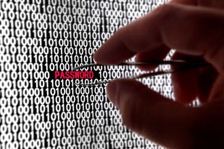

Segurança lógica dos ativos de TI
Como vimos nas aulas passadas, existem diversas ações que deverão ser realizadas com o intuito de diminuir a possibilidade de um incidente de segurança causado por intermédio das diversas ameaças existentes e que estão à espreita em busca de uma vulnerabilidade que possa ser explorada. Dessa forma, além do que foi visto até o momento, cabe ainda recomendar algumas regras básicas.
Quando o assunto é segurança, uma das primeiras coisas a serem feitas é não permitir que pessoas sem autorização tenham acesso aos dados e informações armazenados nos computadores da empresa.
Apesar de todo controle que possa ser implementado, pode acontecer que o invasor consiga passar por todos os procedimentos e etapas de segurança e com isso tenha acesso físico aos equipamentos que estão em algum local dentro da empresa.
Por isso, nesse momento, faz-se necessária a aplicação de outros controles que, da mesma forma que os controles de segurança física, buscarão deixar o ambiente protegido e livre de possíveis ameaças.
A ideia é deixar o computador impenetrável mesmo que a pessoa esteja localizada na frente do equipamento e não consiga manipular os dados que estão dentro dele. Você de imediato já pensou em colocar senhas, não foi? Isso mesmo, quando falamos em não deixar a pessoa que tem acesso físico ao equipamento fazer uso dele, realmente estamos nos referindo a controles que imputem um bloqueio de acesso lógico.
Como a segurança lógica é invisível aos olhos humanos, as pessoas só saberão que estão sendo controladas quando aparecer alguma mensagem dizendo, por exemplo, "Acesso negado". A segurança lógica procura colocar controles intangíveis e que façam o ambiente ficar com um nível de segurança aceitável, uma vez que só terão acesso aos dados as pessoas que tiverem um código, cartão ou uma característica biométrica cadastrada e que dê a ela a autorização para ver, manipular, alterar ou apagar alguma informação.
Em alguns casos, pode acontecer que mesmo assim o invasor consiga passar por mais essa barreira, e por isso faz-se importante que sejam implementados controles para verificar o que ele fez na máquina quando teve esse acesso lógico.
Não basta apenas ver – é necessário registrar em um arquivo de LOG o que foi feito pela pessoa no sistema, de forma a guardar as evidências.
É uma boa prática que todos os funcionários sejam treinados para informar à área competente quando suspeitarem que uma situação dessa esteja ocorrendo dentro do ambiente da empresa.
Acesso lógico
O Acesso lógico é o processo de atribuir permissão a recursos de ativo de informação, localizados dentro dos ambientes de Tecnologia da Informação e que são diariamente colocados à disposição para os usuários da empresa, de forma que consigam realizar as tarefas diárias para as quais foram contratados.

Essas tarefas podem estar relacionadas à inclusão de dados em sistemas, manipulação de relatórios, inclusão e exclusão de informações em sistemas entre outros.
Para o controle de acesso lógico podem ser utilizados mecanismos como listas de acesso (ACL´s – Acess Control List´s), que descrevem direitos, permissões e restrições a que um determinado usuário estará sujeito após o processo de identificação.
Com o acesso lógico atribuído a um colaborador da empresa, diversos itens poderão ser estabelecidos para a atribuição no seu perfil de acesso:
- O que ele ou o grupo ao qual pertence pode acessar?
- Quando ele ou grupo pode acessar?
- Quais recursos estarão disponíveis para um usuário ou para o grupo de usuários?
- Dentro de cada recurso, qual o nível de acesso que será concedido?
- Etc.
A segurança lógica está diretamente atrelada principalmente aos aspectos relacionados à confidencialidade, integridade, autenticidade, bem como rastreabilidade dos dados e das informações.
Quanto ao aspecto confidencialidade, este já é bem conhecido por nós, pois a segurança lógica deverá implementar controles para que se consiga atribuir o acesso à informação apenas para a pessoa ou o grupo que foram definidos pelas políticas e normas internas da empresa. Já quanto ao aspecto integridade, os controles da segurança lógica deverão permitir que a informação mantenha-se sempre íntegra e que não sofra modificação sem que o dono tenha autorizado.
Não adianta apenas saber quem acessou a informação, faz-se necessário ter provas que não permitam que haja dúvidas sobre a autoria de alguma ação maliciosa feita por alguma pessoa.
Como vimos no início deste material, temos que acompanhar o que o invasor está fazendo nos sistemas, e por isso a segurança lógica deverá implantar ações que ajudem no rastreamento das atividades de um invasor dentro dos sistemas, buscando encontrar e registrar situações de inconformidades.
Os níveis de proteção de que os recursos de Tecnologia da informação necessitam estarão ligados diretamente à necessidade de acesso que cada colaborador da empresa deverá ter aos dados e às informações que estiverem guardadas dentro dos servidores corporativos.
A segurança lógica deverá abranger aspectos relacionados aos dados que estão armazenados dentro dos equipamentos de Tecnologia da Informação, e desta forma o primeiro nível de controle lógico que deve ser implementado está relacionado à permissão de acessos a esses dados.
Algumas perguntas que merecem ser respondidas para ajudar na implantação da segurança lógica: Quem poderá acessar? Acessando, o que esta pessoa poderá fazer? Como monitorar o que foi acessado? Quando monitorar? A que horas a pessoa poderá utilizar o recurso liberado? Essas são apenas algumas das perguntas que ajudarão a identificar o nível de controle que deverá ser implementado.
Os dados estarão armazenados, e por isso outros aspectos relacionados à segurança lógica deverão ser considerados, como por exemplo, a necessidade de deixar os dados criptografados como forma de atribuir o acesso apenas para as pessoas que tiverem a chave de acesso. Da mesma forma, a implementação de rotinas de auditoria ajudará na investigação de acessos indevidos.
O próximo nível de preocupação deverá estar relacionado ao acesso lógico dos dados e das informações que estão armazenadas nos servidores, ou seja, os processos de autenticação, validação dos usuários do sistema, passando-se depois à verificação das necessidades de correções dos sistemas operacionais das máquinas, bem como atualização de drivers, atualização de firmwares e outros elementos de configuração.
A não ser que a pessoa seja o administrador da rede, os demais colaboradores da empresa não têm acesso físico ao servidor, apenas possuem acesso lógico onde pode ser criada uma unidade de rede para que possa guardar as informações importantes da sua unidade.
O próximo nível de preocupação da segurança lógica está relacionado à implantação de ferramentas de defesa lógica, como por exemplo Firewalls, IDS, VPN, PROXY etc., itens estes que veremos em módulos posteriores.
Dentro da segurança lógica, temos que atentar a quatro itens que ajudarão a fechar todo o processo de forma macro.
A identificação
O primeiro ponto de controle implementado dentro da segurança lógica está relacionado à identificação. A identificação de quem pode acessar um sistema ou informação pode ser feita por meio de uma lista com nomes das pessoas que poderão acessar determinado sistema ou aplicação.
Dessa forma, se a pessoa já não fizer parte dessa lista, é um sinal de que ela não deveria ter acesso e por isso estava com o seu passe bloqueado, e assim já não é mais necessário continuar com o próximo passo, uma vez que esse usuário não está cadastrado para o sistema ou aplicação.
Esses usuários também podem ser agrupados de forma a criar um conjunto de indivíduos com as mesmas características de acesso e direito e dessa forma facilitar a tarefa do administrador para o processo de atribuição de direito e acesso lógico.
Descobrir o nome de um usuário é uma coisa bem simples, e por isso existe a necessidade de um segundo nível de segurança e que está relacionado ao processo de autenticação.
A autenticação
Quando nos referimos ao processo de autenticação estamos querendo dizer que ele precisa ter algo que consiga provar que o colaborador que está entrando com a sua identificação realmente é quem diz ser. Esse processo pode ser feito com a digitação de uma simples senha, por exemplo.
O fato também de uma pessoa apresentar uma senha não significará que ela é quem realmente diz ser, uma vez que uma senha pode ser adivinhada, roubada, perdida ou até mesmo emprestada.
Por meio do aumento da complexidade na elaboração das senhas, bem como da quantidade de símbolos e letras que são utilizados para a sua confecção, pode-se conseguir uma maior robustez e força para elas.
Para complementar o processo e aumentar ainda mais a segurança, pode ser solicitado que a pessoa a ser identificada tenha que apresentar/passar ou até mesmo aproximar de um sensor um artefato como um cartão, credencial, uma chave que fará uma interação com o sistema que permitirá ou não o seu acesso também.
Mesmo assim a autenticação poderá estar comprometida, pois esse artefato pode ser perdido ou emprestado e, dessa forma, não se conseguirá provar a identidade.
Finalizando o processo de autenticação, poderíamos apontar para a necessidade de que além dos elementos anteriores seja necessário que o usuário apresente algo que possa provar que quem está sendo autenticado realmente é quem ele diz ser.
Acredito que você já se lembrou de algo que vimos durante o nosso curso, não foi? Isso mesmo, a Biometria, uma característica física ou comportamental do indivíduo que pode ser utilizada para provar sua identidade.
Agora, estando a pessoa devidamente autenticada, ela deverá receber as credenciais para acessar um determinado recurso, ou seja, a autorização.
A autorização
Quando alguém necessita de acesso lógico a alguma coisa, é porque precisa de um dado ou de uma informação que estão armazenados em algum recurso de tecnologia da informação para poder realizar alguma atividade para o seu processo de negócio. É claro que quando colocamos essa afirmação, estamos pensando no ambiente de uma empresa, onde os colaboradores necessitam ter autorização para acessar determinadas informações para realizar suas tarefas diárias.
O mecanismo de autorização consiste de uma série de regras que foram estabelecidas e que especificam para cada dado ou informação armazenados nos equipamentos de Tecnologia da informação o usuário ou grupo de usuários que poderão utilizá-los e dentro deles que tipo de operação poderá ser realizada.
Depois de acessar a informação, faz-se necessário que exista alguma forma de controle para verificar o que foi feito com o acesso liberado. É claro que nesse momento estamos falando em implementar o processo de auditoria.
Auditoria
Para que possamos saber o que está sendo feito com o acesso concedido, faz-se necessário coletar as informações sobre os acessos dos colaboradores, bem como identificar o que foi feito dentro dos recursos com as atribuições concebidas.

A senha é uma excelente forma que os sistemas têm para segregar acesso às informações, uma vez que sem essa senha a pessoa nada poderá fazer dentro do ambiente. Quando uma senha passa a ser compartilhada por mais de uma pessoa, o seu grau de segurança reduz proporcionalmente, já que as pessoas que tiverem a posse dela tendem a aplicar cuidados diferentes.
O aumento de pessoas utilizando a mesma senha faz aumentar também o risco de sua revelação. Na maioria das vezes, a maior parte das invasões nos sistemas decorre de problemas com revelação de senha para pessoas não autorizadas. Isso acontece porque algumas pessoas, por medo de esquecê-las, têm o costume de criar senhas fracas e fáceis de serem adivinhadas/quebradas. Um exemplo pode ser descrito a seguir. Nome do usuário => Edison Senha = > Edison e assim por diante.
É importante que a empresa adote uma política de utilização de senha como forma de fortalecer esse ponto fraco da segurança dentro das empresas. Existem várias formas de se criarem senhas seguras, podendo-se utilizar desde palavras invertidas com combinações com números até mesmo a utilização de mnemônicos, ou seja, pegar palavras ou letras-chave de uma frase e utilizá-las como senha, bem como substituir alguns símbolos por letra, como o S por $, o E por 3, A por @ ou até mesmo O por 0, entre outros. Além disso, é recomendável que se utilize para confecção das senhas uma combinação de letras maiúsculas, letras minúsculas, números, símbolos e caracteres especiais.
Um conceito mais utilizado atualmente em segurança lógica está relacionado ao processo de Gestão de Identidades ((Identity and Access Management - IAM), que consiste na administração e no controle da identificação do acesso individual dos colaboradores da organização aos seus sistemas corporativos. O processo visa disponibilizar os recursos necessários, bem como fazer a atribuição dos direitos, privilégios e respectivas restrições aos sistemas da empresa.
A ideia básica seria a elaboração de uma política de Gestão de Identidades composta por normas e recomendações que possibilitarão mitigar os possíveis riscos envolvendo informações e processos da empresa com relação ao uso dos computadores, de forma que não haja prejuízos ao negócio da empresa.
A necessidade da gestão de identidade surgiu devido ao crescimento acelerado das empresas e, consequentemente, com o aumento do número de sistemas que estão interligados entre si e que necessitam ter o acesso gerenciado e controlado.
O aumento da quantidade de sistema gera uma série de trabalhos administrativos por parte da equipe técnica, principalmente em controles relacionados a direito de acesso e trocas de senhas. As constantes mudanças das áreas exigem também que os acessos anteriormente atribuídos sejam revisados, de forma que não haja problemas quanto à confidencialidades das informações, bem como devem estar de acordo com regulamentações nacionais e internacionais quando o assunto está relacionado a acesso não autorizado.
Outro problema a ser equacionado é o grande número de contas de usuários que têm acessos privilegiados, e às vezes trata-se de ex-funcionários que já não pertencem ao quadro da empresa.
Com o Gerenciamento de Identidade e Acesso pode-se utilizar processo e tecnologias com o intuito de gerenciar as identidades digitais dos colaboradores da empresa, além de especificar como estas serão utilizadas para acessar os recursos de Tecnologia da Informação.
A ideia básica é padronizar o gerenciamento de acesso dos colaboradores em diferentes plataformas, dispositivos, aplicativos e nos processos de negócios.
Como algumas das vantagens da utilização desse tipo de sistema podemos citar:
- Aumento da produtividade do usuário, uma vez que existirá um aumento do acesso aos dados e às aplicações corporativas da empresa no momento em que ele precisar (disponibilidade).
- Aumento da produtividade da área de Tecnologia da Informação, bem como da área de Suporte, devido à simplificação das tarefas administrativas de rede, principalmente no que diz respeito ao gerenciamento, à administração das senhas e delegação de acessos.
- Aumento da conformidade de segurança, uma vez que os controles serão mais bem gerenciados e adequados às políticas da empresa.